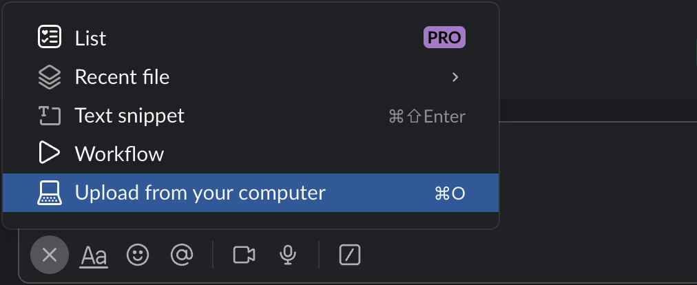
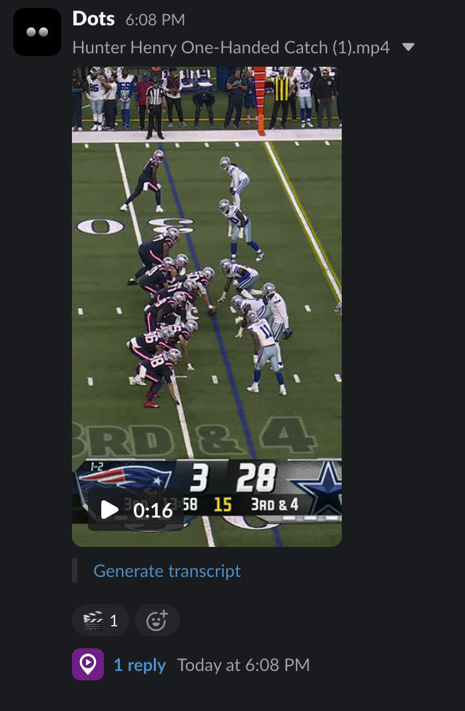
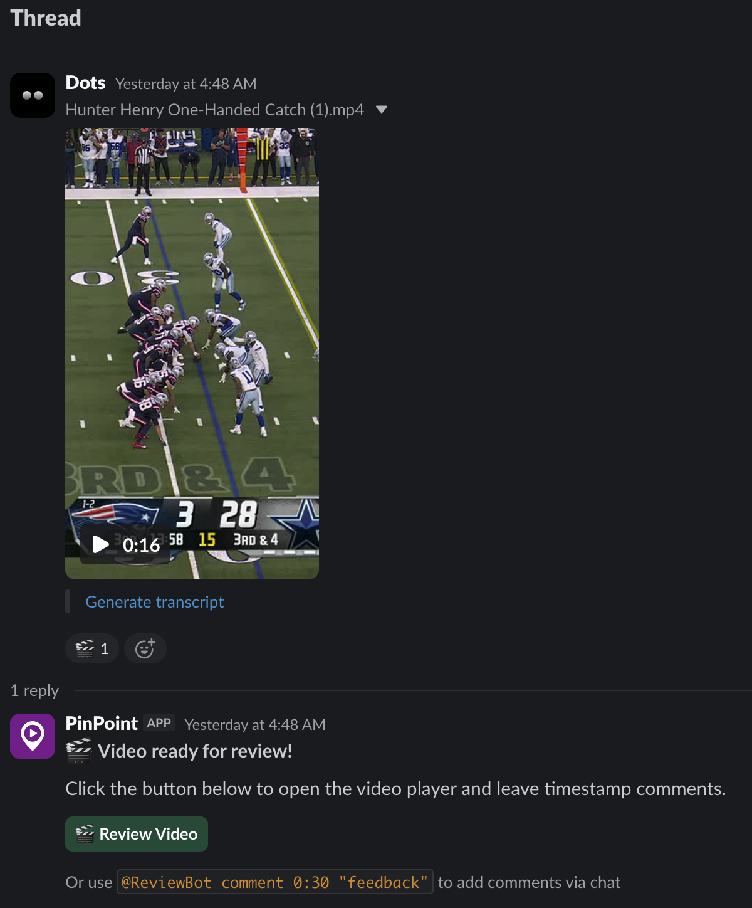
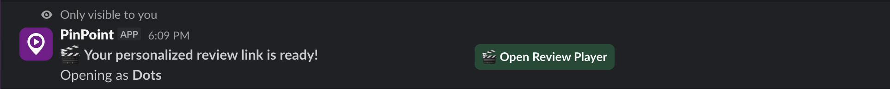
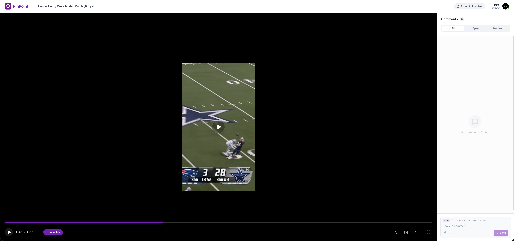
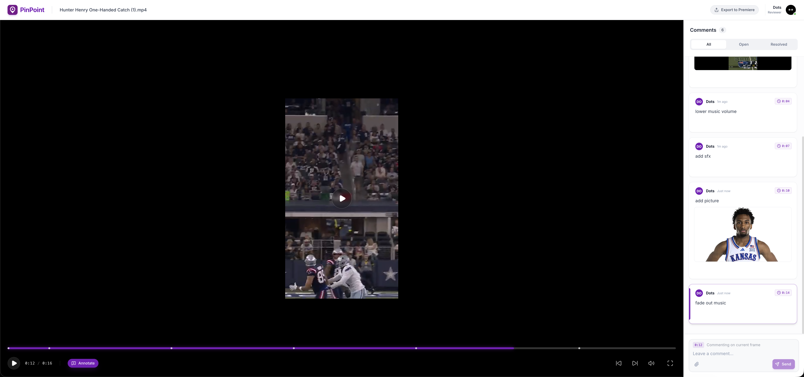
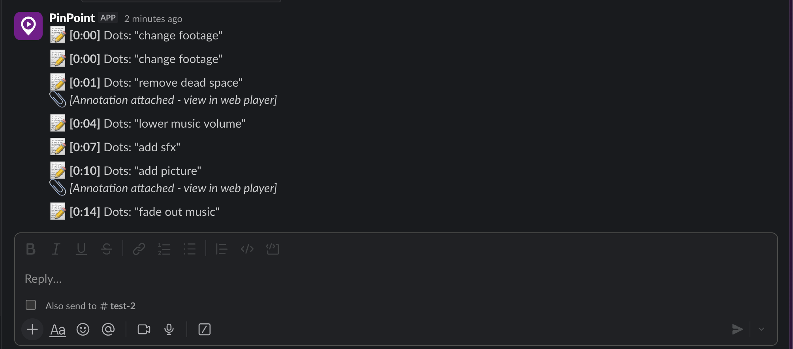

Video Review, Right Inside Slack
How It Works — Step by Step
pinpointapp.dev
Start by uploading any video file to a Slack channel where PinPoint is installed. Simply drag and drop, or use the attachment menu and select "Upload from your computer". PinPoint supports all major video formats — MP4, MOV, WebM, and more.
💡 No need to leave Slack, switch tools, or share links. Your video stays where your team already works.

The moment you upload a video, PinPoint automatically detects it and processes it for review. You'll see a reply from the PinPoint bot appear in the message thread within seconds — no commands, no setup, no manual triggers needed.
⚡ PinPoint works instantly — zero configuration required after installation.

In the video's thread, PinPoint posts a message with a "Review Video" button. Any team member in the channel can click it to open the dedicated web-based review player. You can also add comments directly from Slack using the inline command syntax shown.
🎯 Two ways to review: click the button for the full player, or use Slack commands for quick feedback.

When you click "Review Video", PinPoint sends you a private ephemeral message with your personalized review link. This link is unique to you — your name and avatar automatically appear in the review player so the team knows who left each comment. No sign-up or login required.
🔒 Each reviewer gets a unique, authenticated link — no accounts, no passwords, no friction.

The PinPoint Review Player opens in your browser with a professional, distraction-free interface. Watch the video with full playback controls, leave timestamped comments, and use the Annotate tool to draw directly on the video frame.
🎬 Scrub to any frame, leave a comment, and it's automatically linked to that exact moment in the video.

Leave as many timestamped comments as you need. Attach reference images, draw annotations directly on the video frame, and see all feedback organized in a clean sidebar. Each comment includes the exact timestamp — click any comment to jump to that moment.
✏️ Pro tip: Use the Annotate button to draw circles, arrows, and highlights right on the video frame.

Every comment you leave in the web player is automatically posted back to the original Slack thread. Team members who prefer Slack can see all feedback without ever opening the browser. Timestamps, text, and annotation indicators are all included — keeping everyone in sync.
🔄 Full two-way sync: review in the browser, discuss in Slack — nothing gets lost.
